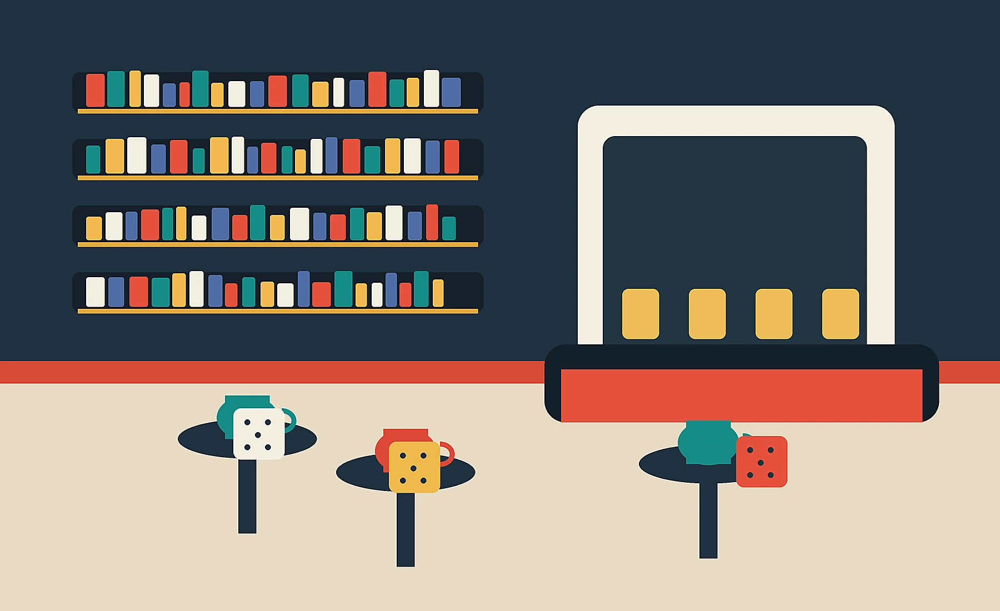
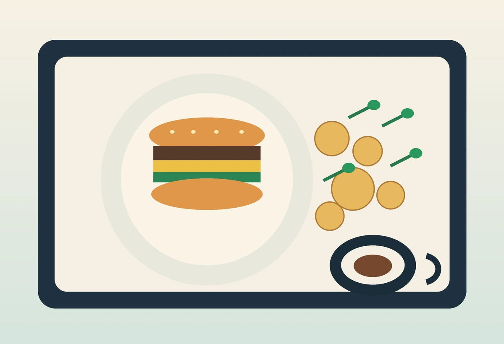
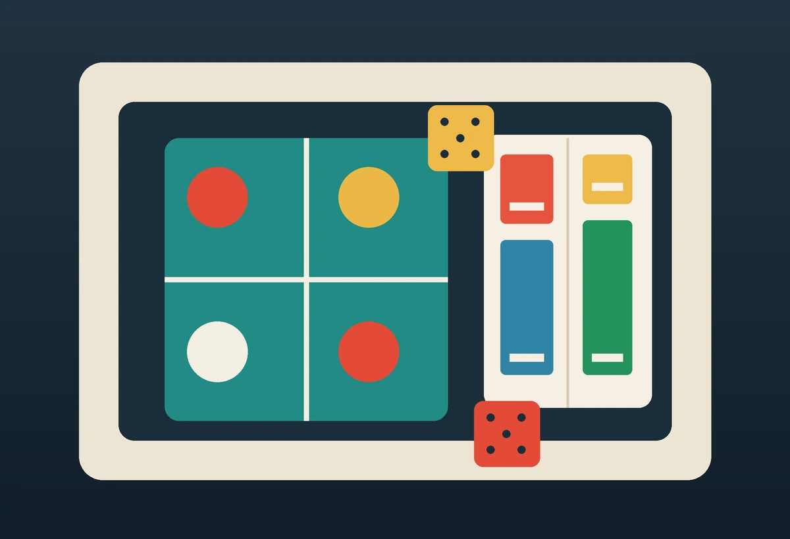
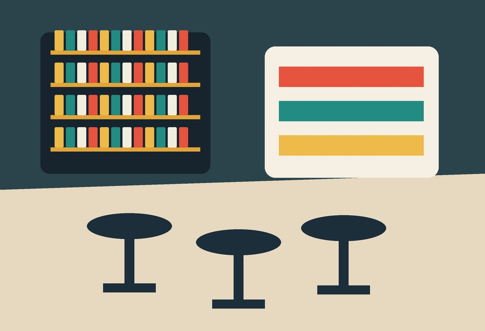

Rabat Agdal · Café restaurant · BD · Jeux
Le Nautilus Café BD Ludothèque
Un lieu chaleureux pour lire, jouer, bruncher et dîner entre amis ou en famille, au numéro 3 Rue Ouhoud.
Concept
Café, cuisine et culture ludique dans une seule adresse.
Le positionnement public du Nautilus est clair: une expérience hybride qui réunit café, restaurant, mangas, bandes dessinées et jeux de société. Le site met donc la transparence au centre: horaires, tarifs de jeu, réservation et accès rapide à l'itinéraire.
4,5+note Google publique
50-100MAD fourchette moyenne
1-2,5 hdurée de visite typique



BD Ludothèque
Un lieu pour rester, pas seulement consommer.
La proposition la plus différenciante du Nautilus est l'activité: mangas, romans graphiques, jeux de société et moments familiaux. Le site doit aider les visiteurs à comprendre le concept avant d'arriver, surtout la tarification des jeux.
À programmer
Des rendez-vous qui transforment le lieu en destination.
Une table animée pour apprendre un nouveau jeu sans pression.
Créneau pensé pour les groupes qui restent deux heures ou plus.
Réservation de groupe, coin lecture et formule à confirmer.
Ambiance
Une identité visuelle chaude, lisible et ludique.
Réservation
Préparer votre visite.
Choisissez un créneau, indiquez le nombre de personnes et ajoutez une note si vous souhaitez jouer, dîner ou organiser un anniversaire.
Contact
Rue Ouhoud, Agdal, Rabat.
Le Nautilus se situe près du Stade Postal, avec accès pratique pour les rendez-vous, sorties de groupe et pauses café.
- Téléphone
- +212 6 66 11 68 17
- Adresse
- N°3, Rue Ouhoud, Agdal, Rabat
- Horaires
- Lun-Jeu 08:00-22:30 · Ven 08:00-23:00 · Sam 12:00-23:00 · Dim 12:00-22:30
Questions
Les points à rendre évidents avant la visite.
10 MAD / heure / personne, annoncé clairement dès la réservation.
Oui, le positionnement public met en avant les familles, les enfants, les adultes et les groupes.
Oui, le formulaire permet de préciser un anniversaire ou une table de groupe. La formule reste à valider avec l'équipe.